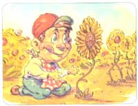

LAST LAUGH
The battle of the flower eaters.
My mother reports that shortly after I learned that crawling was an effective way of getting from mess "a" to mess "b," I developed a fascination with scrambling into her flower bed. With six sisters and a brother to distract her attention, it was a cinch for me to catch two or three unobserved minutes to make a meal of a few roses or tulips. Before the appetizer was even over, though, I would take the express elevator to her shoulder and soon return to a more traditional baloney lunch. Her garden was a wilderness of color and wildlife, and her roses were the size of my head. Who could stay away?
Still taped to the fridge after 30 years is a brown and curling photo of me staring at a bed of sunflowers with a measure of concentration that a brain surgeon would find it difficult to muster. Considering my pretty weird diet at the time, I can only imagine that it was the same kind of concentration that a leopard has before pouncing on an unsuspecting antelope. As I grew, the gardening lessons graduated from simple munching to digging, then planting and watering, then fertilizing and by the time I hit 10, my father declared, while walking to his car one morning, that I was an "old hand." Being called an "old" anything at that age was only slightly more flattering than winning the Pulitzer Prize, so the garden became a place of victory as well as fascination. Then one day, the sweet taste of success turned to ashes in my mouth; somebody besides myself developed a taste for the garden.
It wasn't a measured attack, not a surgical strike at a few isolated and defenseless roses on the perimeter. No, I strode out to the garden for an afternoon watering and discovered the aftermath of Bull Run. A course and broken path of destruction ran straight through the center of the flower bed and continued on until the vegetable patch began. Being only passingly interested in veggies at the time, this was a dagger meant for my heart alone.
"Strictly a flower eater," my mother mused as she surveyed the smoldering ruin. "Interesting."
Interesting? "Holocaust" would have been more like it. It was already tough enough taking flack from my friends for growing flowers in the first place, without my little secrets being carpet-bombed while my back was turned.
The few bulbs that remained seemed to cry out for revenge, and I was instantly determined to give it to them. Not having much in the way of weapons at my disposal at the time, save my vigilance, I was forced to just stand guard and wait for the bastard to strike again. A hundred frustrated attempts to borrow my brother's pellet gun in the wake, I settled for a pile of good throwing rocks.
War, as they say, is days of numbing boredom punctuated by seconds of terror and as I crouched behind a bush and chewed through packs of Wrigley's Spearmint, I got through by just imagining the stone striking the unsuspecting flower destructor in the rump.
Every once in a while, my dog Charlie would come over and take the watch while I dozed or when Mom would demand that I eat lunch. Charlie had brought down game as wily as squirrels and raccoons before, so he had my confidence. As I dug into a peanut butter and fluff, I listened intently as Mom discussed the fence or trap option, relieved that she was actually ready, finally, to use government funds for defense spending. I was just polishing off the milk when something very heavy slammed into the screen door, denting the aluminum frame and knocking the screen half off. Next, a clicking and scratching of claws on pavement, then silence.
I cracked the door and Charlie was crouched near the entryway, whining, begging to come in, and emanating a smell that would make a slaughterhouse air-freshener a viable alternative. Just crossing the flower bed was a black and white creature that was, I could have sworn. . . swaggering. . . unmarked. . . away to his next atrocity as he eyed me in the window.
"Well, kiddo, Charlie took a bullet for you that time," Dad laughed through his paper.
In war, it's always the innocent who pay the price. We couldn't get Charlie to even chase his own tail after that, and my attention gradually moved on to G. I. Joes.
|
 DARREN THOMPSON |
|
|